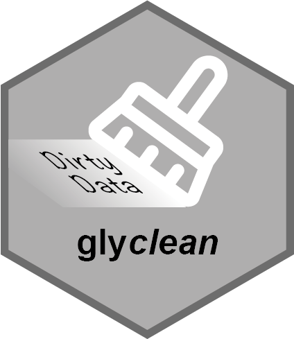

DreamAI Ensemble Imputation
impute_dreamai.RdImpute missing abundances with the mean of the selected DreamAI methods. The default uses all six methods. Select a single method to use its estimates directly.
Usage
impute_dreamai(
x,
by = NULL,
method = c("KNN", "MissForest", "ADMIN", "Birnn", "SpectroFM", "RegImpute"),
...,
seed = 123
)Arguments
- x
A
glyexp::GlycomicSE(),glyexp::GlycoproteomicSE(), orSummarizedExperiment::SummarizedExperiment()object.- by
Optional column name in
colData(sample_infofor legacy experiments), or a grouping vector with one value per sample. Each group is imputed separately.- method
Character vector of DreamAI methods to include in the ensemble. Choose from
"KNN","MissForest","ADMIN","Birnn","SpectroFM", and"RegImpute".- ...
Named arguments passed to DreamAI, such as
kfor the number of neighbors,ntreefor the number of MissForest trees, oriter_SpectroFMfor the number of SpectroFM iterations.- seed
Non-negative integer seed for each fit. Defaults to
123.
Value
A container of the same class and abundance scale as x, with
estimates written only to the missing entries.
Details
DreamAI requires devtools and Bioconductor's impute at run time.
Install impute with BiocManager::install("impute"), then install
DreamAI with devtools::install_github("WangLab-MSSM/DreamAI/Code").
glyclean calls the installed package in a separate R session when a group
has missing values.
DreamAI fits features in rows and samples in columns, on the log2
abundance scale. Observed raw abundances must be positive. For logx
input it uses the supplied coordinates directly. For log-ratios, pass
gamma_ADMIN = 0 when using ADMIN. Each feature and sample needs at
least one observation within each group. KNN standardizes features by
their within-group standard deviation. Use remove_rare() or
remove_constant() to filter sparse or constant features before fitting.
For KNN and ADMIN, k must be smaller than the number of features.
RegImpute needs at least three samples per fit. SpectroFM requires a
C++ compiler, at least 101 observed entries and 11 missing entries per fit.
During fitting, Birnn treats zeros as missing and ADMIN truncates negative
regression estimates to zero.
References
Ma W, Kim S, Chowdhury S, et al. (2021). DreamAI: algorithm for the imputation of proteomics data. bioRxiv preprint, revised May 19, 2021. doi:10.1101/2020.07.21.214205 .
The authors maintain the original source code.
Examples
if (FALSE) { # rlang::is_installed(c("DreamAI", "callr", "devtools", "impute"))
abundance <- matrix(c(2, 3, 5, 8, 4, 6, NA, 16, 8, 12, 20, 32), nrow = 4)
x <- SummarizedExperiment::SummarizedExperiment(assays = list(abundance = abundance))
filled <- impute_dreamai(x, method = "KNN", k = 2)
SummarizedExperiment::assay(filled)
}